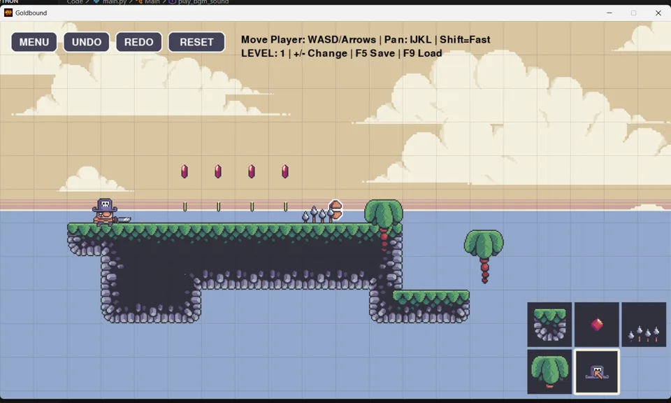
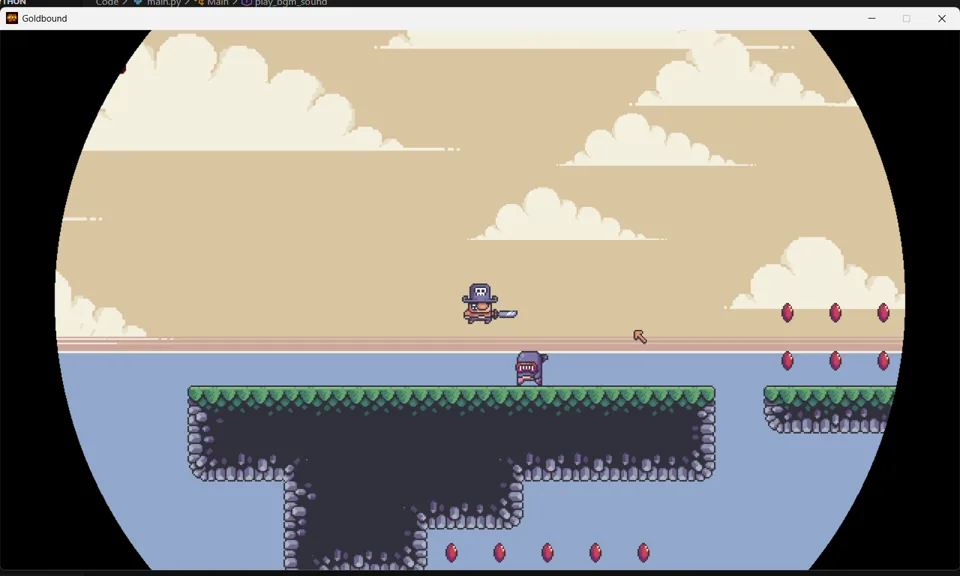
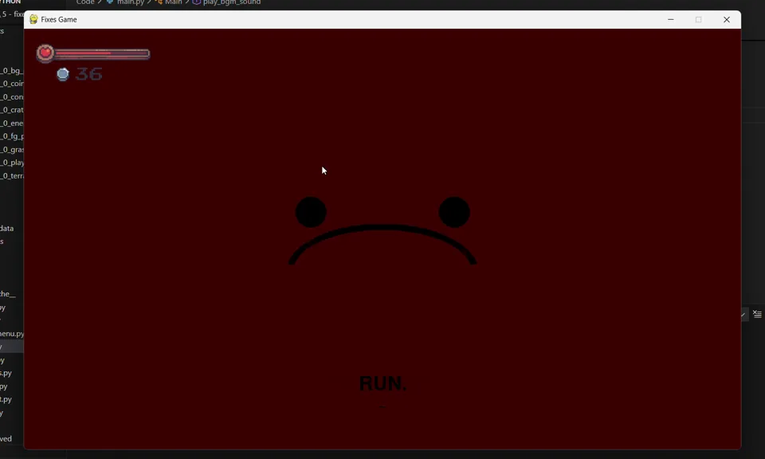

Goldbound: Secret Worlds.
A Python/Pygame platform adventure featuring a level maker with save/load controls, five built-in levels, and a secret limited-vision mode.
Gameplay preview
The video preview is being prepared. The game details are available below.
Play it. Build it. Discover it.
Goldbound: Secret Worlds is my 2D platform adventure made with Python and Pygame. Unlike a simple platformer, it includes a full Level Maker so players can build their own stages, a map with five ready-made levels, and a Secret Mode with a circular limited field of vision. The recording shows the menu, editing tools, gameplay, secret mode, level completion and the map.
Choose Play Your Level, open Level Maker to create a stage, or explore the built-in level map. Move and jump across platforms, collect coins and complete the stage. Try the Secret Mode to play with limited visibility.
Three ways to explore
Five ready-made levels
Explore the level map, play stages and collect coins before reaching the level-complete screen.
Level Maker
Place platforms, trees, hazards, items and characters; use Undo, Redo, Reset, Save and Load.
Secret Mode
Try a different gameplay experience with only a circular window around your character visible.
Features shown in the video
Menu: Play Your Level, Level Maker, Map, Options, Exit
Editor tools including Undo, Redo, Reset, F5 Save and F9 Load
Five-level world map, jumping, enemies, health and coin collection
Limited-vision Secret Mode and a level-completion summary
Development focus
2D movement, physics and platform interactions in Pygame
Designing an in-game level editor and editing controls
Managing multiple levels and progress through a map
Implementing a special limited-visibility gameplay mode
Build a world. Find the secret.
Real moments captured from the original Python/Pygame recording.


